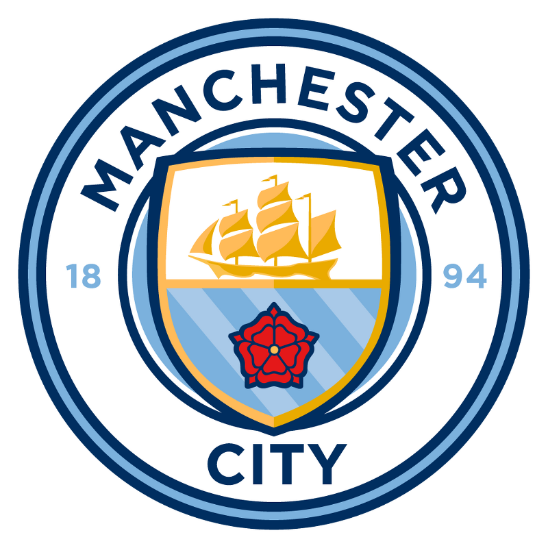
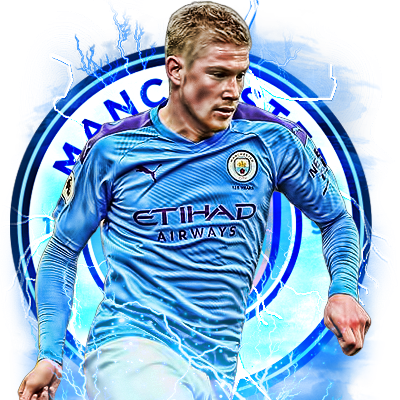

ABOUT
영국 잉글랜드 프리미어 리그 소속 프로 축구 클럽
-

맨체스터 시티 엠블럼
방패는 맨체스터라는 도시의 발생 계기가 고대 로마 시절 요새로 만들어진 것이기 때문에 도시가 지형적으로 방어 능력이 뛰어났던 것을 의미한다.
-
맨체스터 시티 리그우승
맨체스터 시티의 2020/21 시즌 우승이 확정됐습니다. 지난 2018/19 시즌 우승 이후 2년만에 다시 찾아온 우승 타이틀이라고 할 수 있습니다.
-

맨체스터 시티 최고의 선수
맨체스터 시티 우승 이끈 데 브라위너 2년 연속 PFA 올해의 선수 선정 데 브라위너는 이번 시즌 리그서 25경기 2001분을 소화하며 6골 12도움의 성적을 거뒀다.
SQUAD
맨체스터 시티FC
MANAGER: 펩 과르디올라
FW: 가브리에우 제주스
FW: 세르히오 아궤로
FW: 페란 토레스
FW: 라힘 스털링
MF: 케빈 더브라위너
MF: 로드리고 에르난데스
MF: 알카이 귄도안
MF: 필 포든
MF: 페르난지뉴
DF: 카일 워커
DF: 에므리크 라포르트
DF: 후벵 디아스
DF: 존 스톤스
DF: 주앙 칸셀루
GK: 에데르송 모리에스